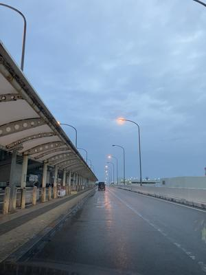
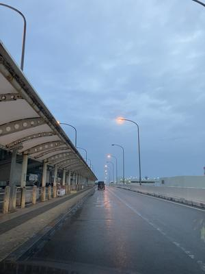
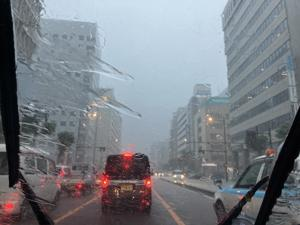
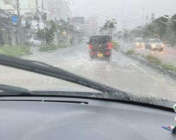
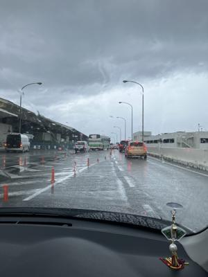
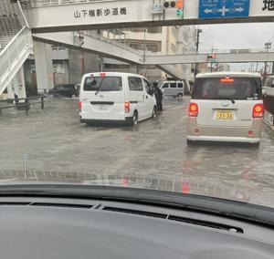

うるがいの話 ある日
最新: 猛烈な雨で恐怖【うるがいの話 ある日】とは 一日だけのプログです
『うるがいの話』の最新一日だけのプログで、通信料が少なく経済的だ。カニの画像をクリックすると全ての日付が載る『うるがいの話』サイトを表示します
|
|
【うるがいの話】 うるがい(ｳﾙｶﾞｲ urugai)とは、『もずくがに』の名前でとても大きくなります。 |
|---|---|
|
|
【カミマヤーの話】 猫のことを方言でマヤーといいます。カミマヤー（kamimayaa）とは、神の猫のことです。 |
|
【たながぁの音楽】 たながぁ（ﾀﾅｶﾞｰ tanagaa）とは手長えびのことで、何種類かあり大きいのは車 エビぐらいになります。 |

|
【ぶながぁの話】 ぶながぁ(ﾌﾞﾅｶﾞｰ bunagaa)とは、赤い髪の毛、赤い身体、そして身長は１ｍ２０ｃｍ ぐらい、川の蟹を食べているの目撃された。場所は沖縄県国頭郡大宜味村のと ある村僕の隣近所に住んでいる爺さんから、聞いた話です。 |
|
|
【ギーマの話】 ギーマ(giima)とは、山原の里山に咲くスズランに似た、 花を付けます。実は食べられます、 気が付くと口の周りが紫になっています。 |
2024年06月14日 (金）猛烈な雨で恐怖
16:12
 

子供が外国へ、もう一人のコドモも内地へ出かけるので、空港へ２度行く。
子供は５時４３分に空港で降ろす。続けて、１１時２５分発のコドモに合わ
せ小降りのなか家を出る。コドモのアパートにつくころは、土砂降り、ワイ
パーしても先があまり見えない。アパートでコドモを乗せ、空港へ向かう。
とんでもない、大雨まるでプールの中を走らせているようだ。事故をしない
ように注意する。
１０時０５分 トマリン付近 プールの中を走っている

小禄の沖縄産業支援センター近くになると、車の流れが止まった。ん、事故
かな？、私は右車線、そこそこ流れている。突如、左車線の車が遅い理由が
分かった。道路が、川になっている。右車線の車は、水没した道路を泳ぐよ
うに車をすすめる。コドモは危険だから、走るのやめよう！といったが止め
られず、何とか川を超える。
１０時１９分 沖縄産業支援センター近く 道路が水没していた

小禄から空港の３階の出発口へ車を走らせる、ホットしたのもつかの間、空
港駐車場へ行く右車線が、・・・、なんと水没している。はて、帰れるだろ
うか、コドモをおろしてビクビクしながら車を走らせる。
１０時２５分 コドモを降ろす 雨あがる

行きとは違い、帰りは海沿いを走らせる。スイスイ、５８号から山下交差点
へ右折する。２車線の左側を走らせていると、水がかなりの深さになってい
る。右車線に車が連なっているので、私も右車線へ並ぶ。交差点近くになる
とパトーカーが駐車、警官が交通整理をしている。反対車線は、完全に水没
したので交通止めになった。
１０時３７分 山下交差点 道路が水没

怖かったです、航空会社の運行状況を確認するとコドモは、１時間遅れて飛
び立っていた。地球温暖化！の影響だろう。
ところで、漢那ダムと羽地ダムの貯水率が１００％にならないのは、おかし
い！と思うのですがいかが。
テレビ朝日報道局
沖縄県の那覇では１時間に６月の観測史上最大となる９４．５ミリの雨が降
りました。記録を更新するのは１９２４年以来１００年ぶりです。
記録的短時間大雨情報も相次いで発表され午前１０時３０分までの１時間に
豊見城市付近でおよそ１１０ミリ糸満市付近でおよそ１１０ミリの猛烈な雨
が降ったとみられています。
琉球新報社
那覇空港事務所によると、相次ぐ落雷のため、日本航空と全日空、スカイマ
ークの３社系の地上作業員が１４日午前９時２０分ごろから同１０時３０分
ごろの間、屋内避難した。そのため着陸機が駐機場に入れず、１時間以上待
機する便があった。離陸にも遅れが出ており、合わせて数十機の運航に影響
が出ている。この影響による欠航便はないという。悪天候のため上空で着陸
待機する便もあった。
１５時５４分 ビットコインの総資産 ￥３０、７７４（↓１０）